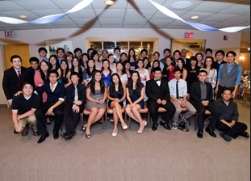
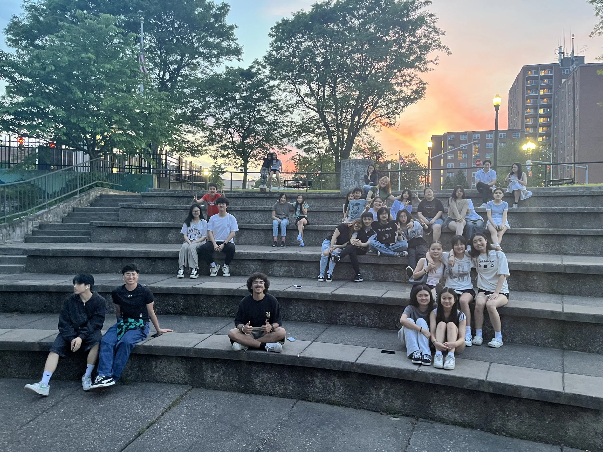

1128團契
11:28 Fellowship
1128團契
11:28 Fellowship
「凡勞苦擔重擔的人，可以到我這裡來，我就使你們得安息。」
"Come to me, all you who are weary and burdened, and I will give you rest."
— 馬太福音 Matthew 11:28
因此，我們稱自己為「11:28」——CityLight 的青年團契。我們由初中生和高中生組成，在一個接納、真誠、靈性滋養的環境中彼此分享、共同成長、同行面對挑戰。我們每週五晚上七時三十分至九時三十分聚會。我們一起學習、禱告、敬拜和玩樂，最重要的是——我們彼此關愛！如需更多資訊，請電郵聯絡 Lexine De Vera。
And thus, we call ourselves "11:28," the youth fellowship of CityLight. We are made up of Junior High and High School students. We share, grow and struggle together in an accepting, honest and spiritually nourishing environment. We meet every Friday night from 7:30 PM until 9:30 PM. We study, pray, worship, and play. Most of all, we care! For more info, email Lexine De Vera.
♥ 聚會時間：每週五晚上七時三十分至九時三十分 ♥
♥ Meeting Time: Every Friday night, 7:30–9:30 PM ♥
團契相片集
Fellowship Gallery


Join Us Online
無法親自出席？線上觀看直播或隨時收看錄影。
Can't make it in person? Watch our services live or access recordings anytime.